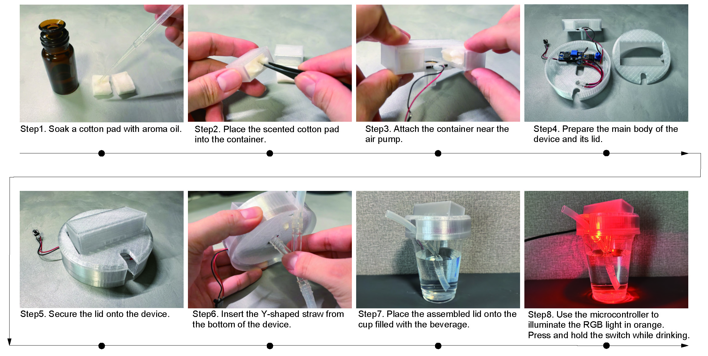
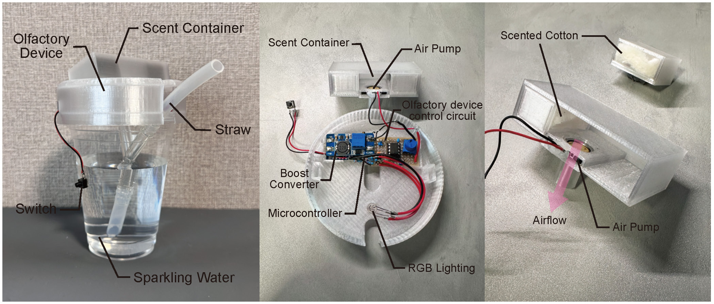
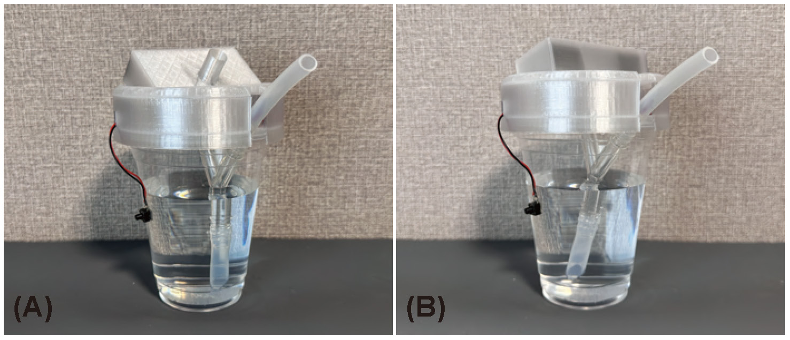
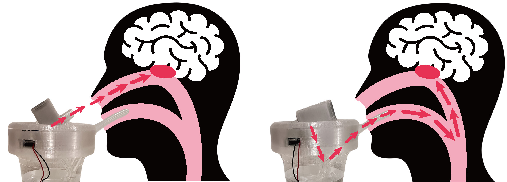
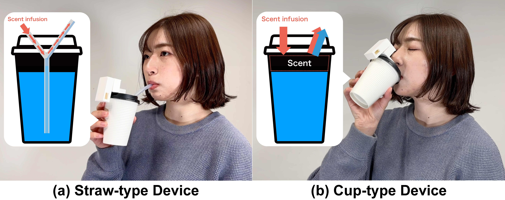
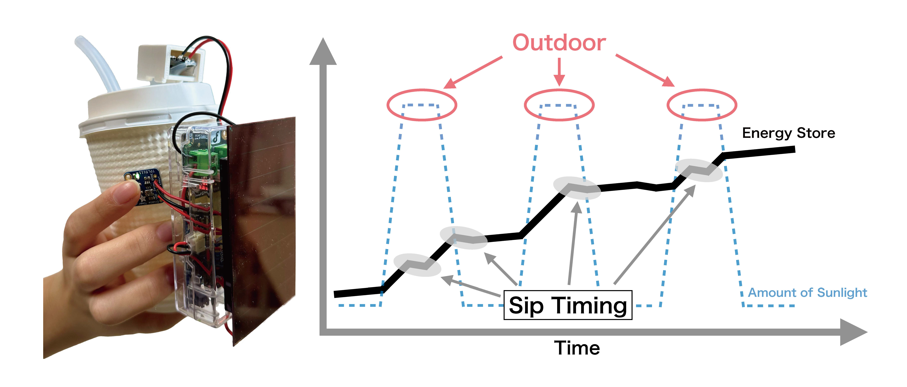

Kaolid
Human-Computer Interaction / Human-Food Interaction / Olfactory Interface
Human taste perception is inherently multisensory, created by integrating olfactory and visual cues. This provides an opportunity to augment flavor experiences through multimodal digital interfaces. We present Kaolid+, a lid-based interface that enhances beverage flavor by simultaneously manipulating aroma and color. While the influence of retronasal smell on taste is known, prior work has not sufficiently explored the difference between orthonasal smell and retronasal smell, nor their synergistic effect with dynamic visual cues. Kaolid+ addresses this gap by integrating a retronasal smell diffuser with an RGB light to change the drink's perceived color. In a user study with unflavored carbonated water, we found that retronasal smell significantly increased perceived sweetness and satisfaction over orthonasal smell. Crucially, combining retronasal smell with congruent visual cues further amplified this taste augmentation effect. Our findings demonstrate that a strategic combination of vision and olfaction can effectively augment taste perception, presenting a practical approach for enhancing beverage experiences. This work contributes a new framework for sensory-driven health and wellness applications in IoT, showing how technology can subtly shape perception to encourage healthier choices.







- Kaolid: a Lid-type Olfactory Interface to Present Retronasal Smell towards Beverage Flavor Augmentation Best Paper Candidate Award
- Kaolid: Lid-type Olfactory Interface to Improve Taste of Beverages with Ortho-Retronasal Smell
- 飲料体験を拡張する充電不要な蓋型嗅覚インターフェースの実現に向けた基礎検討
- Kaolid：飲料の味変化のための口中香を実現する蓋型嗅覚デバイスの設計と基礎評価 最優秀発表賞
- 鼻腔経路の異なる香りを提示可能なデバイスの設計と味覚に与える影響の基礎評価 優秀デモンストレーション賞